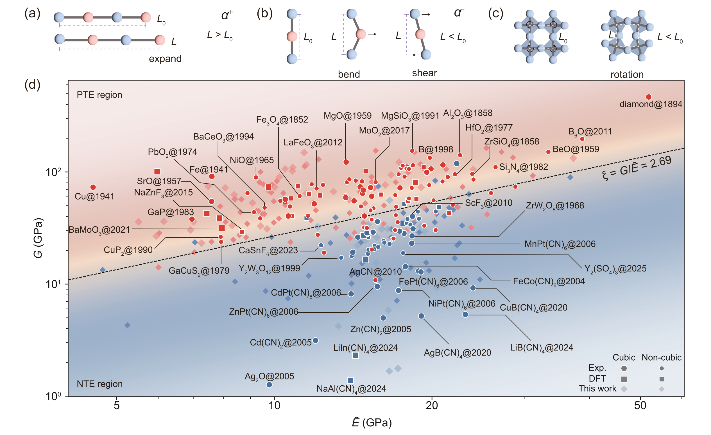
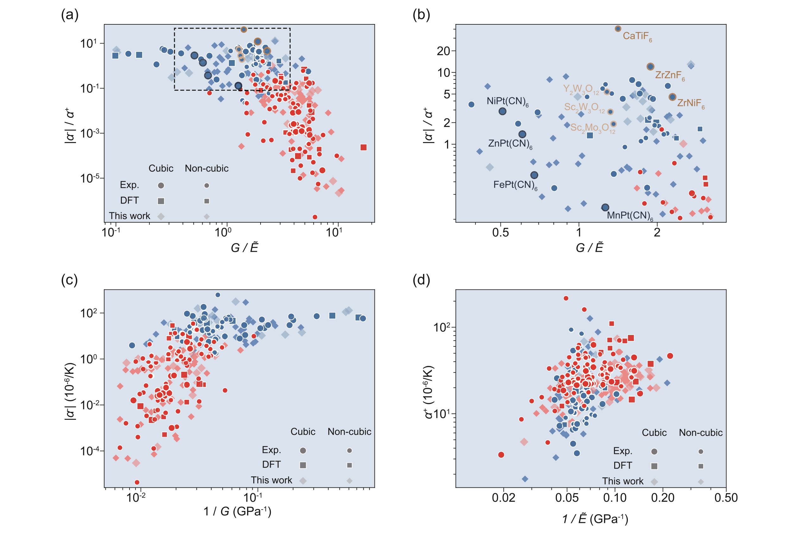
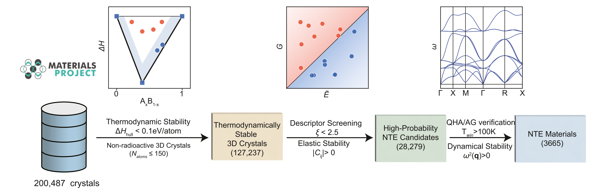
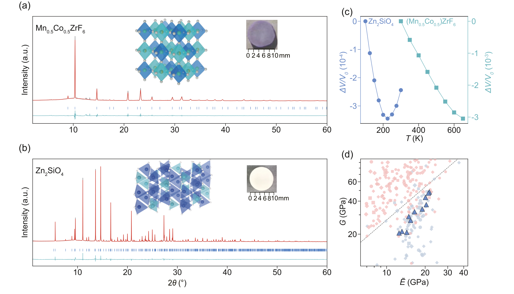
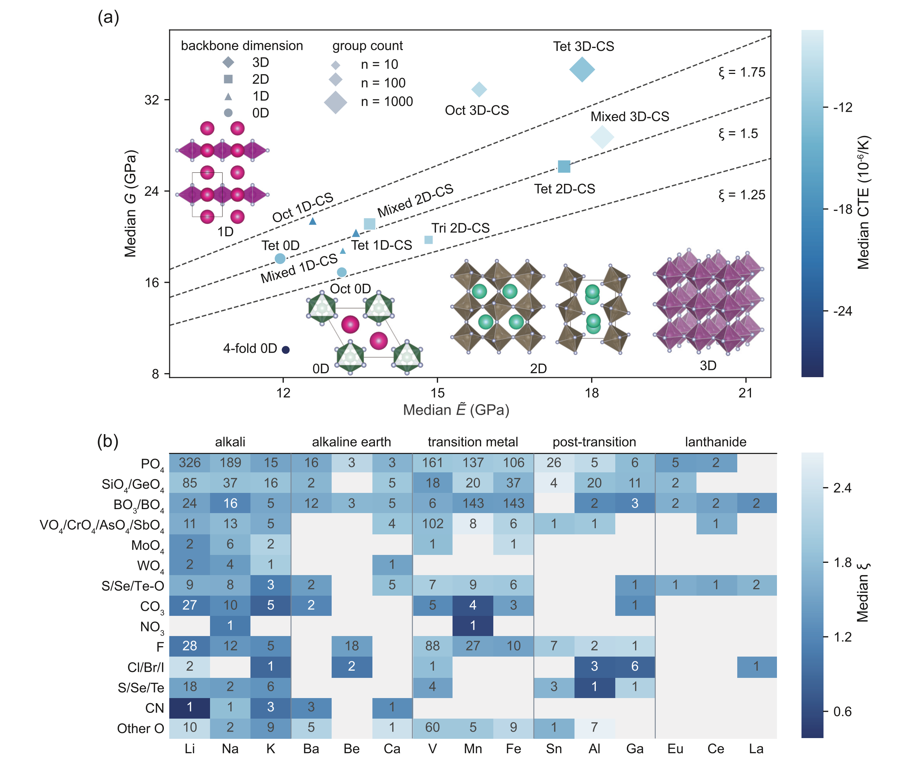
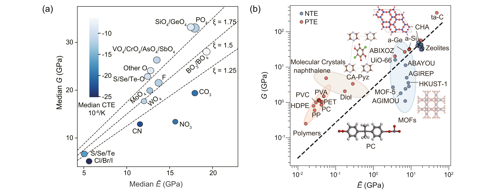

剪切键合比与通用原子势怎样支持大规模负热膨胀材料发现
论文原文 ↗The Shear-Bond Descriptor and Universal Machine-Learning Potential Enable Large-Scale Discovery of Negative Thermal Expansion Materials
Guangming Chen、Shun Tian、Kaiwei Feng 等｜JACS，2026｜DOI｜
大多数材料受热膨胀，少数材料却会收缩。把两类材料合理组合，可以抵消器件尺寸变化、减轻热应力，因此负热膨胀材料对精密光学和微电子很有吸引力。过去的发现常依赖经验和物理直觉，已知材料又分散在不同结构家族中，缺少能够指导大规模搜索的统一规律。
作者从一个多世纪积累的热膨胀数据中，找到连接宏观力学与微观振动的简单描述符：**剪切模量与键合模量之比。**再以这条规则指导通用机器学习原子势的有限温计算，预测 3,665 种负热膨胀晶体，并通过十一种新化合物的合成与表征验证这条发现路线。
方法怎样做：先识别力学规律，再计算与实验寻找材料
作者整理了 324 条材料记录，从剪切、体积和杨氏模量，以及内聚能密度、配位数等物理量中寻找分类规则。采用的 SISSO 方法会把原始量按代数运算组成大量候选表达式，再选出简洁、具有区分能力的公式。作者以 116 个立方材料建立规则，再将它用于 208 个非立方材料。
得到的无量纲描述符为 ξ = G/Ẽ，Ẽ = Uᵥ/n。G 是剪切模量，表示材料抵抗形状变化的刚性；Uᵥ 是单位体积的内聚能，n 是平均近邻配位数，二者构成的键合模量 Ẽ 表征局部键约束强度。

图1｜键伸长与框架运动对应膨胀和收缩两类贡献；剪切模量与键合模量把不同材料组织到同一分类图中。这个比值为何有物理意义？升温会促进键的平均伸长，使材料膨胀；框架也可以通过弯曲、剪切和多面体转动，让连接端点靠近，带来收缩。较低的 G 使集体框架运动更容易发生，较高的 Ẽ 则保留较强局域键约束。因此，较低的剪切键合比有利于收缩贡献占优势。作者以声子贡献分解和模量间的标度趋势解释这一竞争。

图2｜剪切与键合模量分别联系到热膨胀的负、正贡献，为数据中发现的比值提供物理解释。接下来，作者将规则用于 Materials Project 中的 200,487 个晶体。先按竞争相能量筛选，再要求力学稳定和 ξ<2.5，留下 28,279 个更有希望的候选。通用原子势 MatterSim 接收元素、原子位置和晶胞，快速计算能量、力及相关力学量，使这些结构能够进入声子和有限温评价。
对立方晶体，作者在不同体积下计算声子和自由能，寻找每个温度的平衡体积，这就是准谐近似。对非立方晶体，则结合方向应变对声子的影响与完整弹性响应，得到各方向及总体积的热膨胀。两条路线把静态力学倾向转化为实际温区中的体积变化预测。

图3｜能量、力学与有限温振动逐级筛选，将数据库结构转为负热膨胀候选。以 Zn₂SiO₄ 为例，计算剪切模量约 32.0 GPa、键合模量约 16.5 GPa，得到 ξ≈1.94，进入初筛区域；声子和有限温计算进一步预测其受热收缩。作者随后合成样品，用变温衍射测量晶格和体积，将描述符、计算预测与真实材料连接起来。
主要结果：跨结构分类、数千候选与十一种实验发现
在立方材料中，剪切键合比的分类边界 ξ=2.69 给出 96.55% 的准确率，五折交叉验证平均约为 96.3%。同一公式与边界用于非立方材料，准确率为 80.77%。这一结果显示剪切与键合的竞争可以跨晶体对称性识别热膨胀倾向，也为后续更精细的方向性计算提供了入口。
经过完整筛选链，作者预测 3,665 种具有超过 100 K 收缩温区的晶体，并将结果整理为 NTEdb。研究者可以结合收缩温区与机械刚性寻找适合不同用途的材料。
实验方面，作者合成并表征了 十一种此前未报道的负热膨胀化合物。其中五种来自预测库，六种为 Materials Project 中没有的四元、五元组成，展示了描述符向库外化学空间的延伸。

图4｜衍射确认材料结构，变温测量给出体积变化，并将实验材料放回剪切键合分类图。Zn₂SiO₄ 在 100–225 K 的平均体积热膨胀系数为 −2.76×10⁻⁶ K⁻¹；由氟配位八面体连接而成的 Mn₀.₅Co₀.₅ZrF₆，在 300–650 K 为 −8.73×10⁻⁶ K⁻¹。两种不同结构与化学环境中的材料，都通过变温衍射表现出预测的收缩，说明这条力学路线能够指导实际材料发现。
研究贡献：把材料家族经验转为可计算的设计规律
作者进一步按骨架连接方式和局部化学基元整理候选。连接较少的骨架容易降低剪切刚性；三维共顶点网络则可以通过铰链式集体运动，在保持局部键约束的同时实现收缩。不同化学家族也能通过不同方式调节两个模量的相对关系。

图5｜骨架连接方式和局部化学基元如何影响模量及负热膨胀倾向。
图6｜不同化学家族调节剪切键合比的路线，以及这一描述符在聚合物、分子晶体、MOF 等类别中的应用。这篇工作的核心贡献，是把宏观机械性质与微观晶格动力学连接起来：简单、可解释的描述符负责确定搜索方向，通用原子势支持大规模有限温计算，实验确认新的材料成员。由此，负热膨胀材料发现从分散的家族经验转向可以系统筛选和扩展的设计过程。
附：完整原始摘要中文翻译
负热膨胀（NTE）材料对于缓解热应力以及设计先进技术中尺寸稳定的部件至关重要，但表现出这种反常行为的化合物本质上仍很稀少。新型负热膨胀晶体的发现，传统上依赖偶然的经验观察与物理直觉，缺乏普适设计原则严重限制了这一过程。在这里，我们将一个多世纪积累的热膨胀数据与先进机器学习相结合，识别出可解释的宏观热膨胀力学描述符，即剪切模量 G 与键合模量 Ẽ。利用这些描述符，可以基于剪切键合比 G/Ẽ 构建普适的热膨胀图景，从而在多样的结构和化学空间中，稳健地区分正热膨胀（PTE）与负热膨胀材料。
在这些普适描述符的指导下，借助通用机器学习原子间势开展高通量有限温模拟，我们从理论上预测了 3,665 种具有宽工作温区的负热膨胀晶体。对十一种此前未报道的负热膨胀化合物进行实验合成与表征，直接证实了这一理论引导范式的可靠预测能力和可迁移性。这些结果连接了宏观力学与微观晶格动力学，使负热膨胀材料发现成为系统、可扩展且由数据驱动的科学过程。